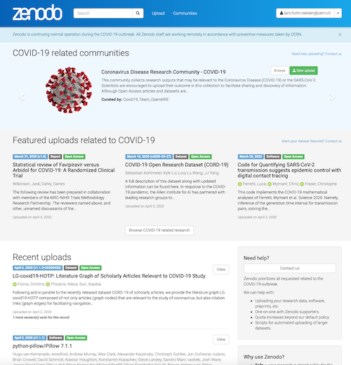
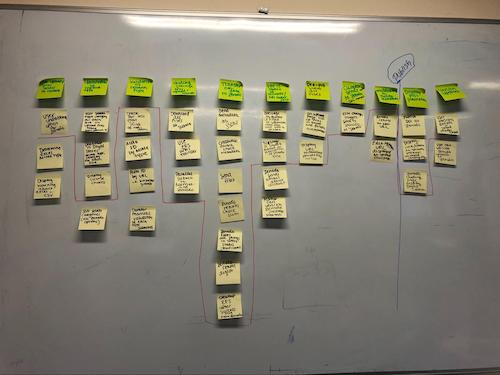

Slow or inaccessible zenodo.org
by
 Alex Ioannidis,
on June 9, 2020
Alex Ioannidis,
on June 9, 2020
During the past week, our users may have experienced that Zenodo was slow or inaccessible at certain times. This was caused by several independent incidents during the past week.
May 30th, stale database connections (resolved)
On May 30th, a large fraction of requests to zenodo.org would result in an error. The root cause was stale connections between the database server and the network file storage hosting the database files due to a faulty client software version. The incident happened during European night time outside normal business hours and required the intervention of the CERN database infrastructure experts to fully resolve the issue, which unfortunately meant it took a total of 10 hours to fully investigate and resolve the issue.
Abnormal traffic patterns (ongoing)
During the past week, Zenodo has been hit by abnormal traffic patterns from automated clients for which our multiple existing measures (e.g. rate-limiting) have not been able to keep the traffic flow properly balanced between clients accessing zenodo.org.
All Zenodo staff are assigned to resolving the issue, and we have implemented several measures during the past week that unfortunately have not been enough to get the traffic flow under control. We continue to implement further measures, however, some of these operations are comparable to changing tires on a truck driving at full speed and thus takes time and requires utmost care.
We hope to soon have traffic flow under control, and apologise for the inconveniences it may have caused.
Fighting the Coronavirus Disease (COVID-19)
by
 Alex Ioannidis,
on April 2, 2020
Alex Ioannidis,
on April 2, 2020
To confront the Coronavirus Disease (COVID-19) outbreak rapidly necessitates an extraordinary collaborative effort of the scientific community that consequently needs to act fast in sharing results in an unprecedented manner, across disciplines and across borders. Open Science is an ideal weapon in the armoury to help fight COVID-19 by facilitating the unrestricted and timely sharing of the latest research related to the pandemic.
We (Zenodo/CERN and OpenAIRE) are responding to a call by the European Commission for synchronised action and collaboration among important initiatives in the European Open Science Cloud (EOSC) to facilitate efforts by scientists worldwide working relentlessly to stop the pandemic.
We are today contributing to the call for action with what we do best — preserving and sharing all COVID-19 related datasets, software, preprints or any other research objects that can help the scientific community to find a breakthrough solution to this universal problem.
We have taken some immediate actions:
- Coronavirus Disease Research Community: We have created a new COVID-19 Research Community on Zenodo endorsed by the European Commission. The community content is automatically fed into the OpenAIRE Open Research Gateway which is currently under development by OpenAIRE and will result in a single point of entry for all research results and other useful resources for the Coronavirus Disease (COVID-19) and SARS-CoV-2.
- Curation: A team of experts nominated by OpenAIRE (see list below) has been created to curate the COVID-19 community. Further, Zenodo is adding a data curator (@StephvandeSandt) to scout for further COVID-19 uploads outside the community and coordinate the COVID-19 curation efforts on Zenodo with other teams worldwide.
Support: We do not want anyone to have any issues sharing relevant information on Zenodo. Please contact us for any questions you may have (COVID-19 related support requests are prioritized). We can further offer:
- Liberal quota increases (beyond the current limits of 50GB) if needed
- 1-on-1 dedicated support via chat with Zenodo supporters.
- Help with automated uploads to Zenodo of large datasets.
Homepage: we have revamped our homepage to make sure that COVID-19 research objects and communities get the necessary visibility. 
We count on you to find a solution to the outbreak. We will do our best to support you all the way, from sharing your great research to enhancing your collaborative work!
Together we can!
Are we missing something? Do you feel like helping us out?
We welcome anybody that wants to help us improve Zenodo COVID-19 content in any way, by exposing more relevant information, curating datasets, or even improving Zenodo features! Please, get in touch with us and share your feedback.
Curation team for the Coronavirus Disease Research Community
The curation team is reachable through the following email address for further clarification or information: covid19@openaire.eu.
Curator List:
- Ilaria Fava, UGOE, Germany
- Emma Lazzeri, CNR, Italy
- Alessia Bardi, CNR, Italy
- Iryna Kuchma, EIFL, Ukraine
- Paolo Manghi, CNR, Italy
- Stephanie van de Sandt, CERN, Switzerland.
Dryad & Zenodo: Our Path Ahead
by
 Alex Ioannidis,
on March 10, 2020
Alex Ioannidis,
on March 10, 2020
In July, 2019 we were proud to announce a funded partnership between Dryad and Zenodo. Today, we are excited to give an update on our future together.
Dryad and Zenodo have both been leading the way in open-source data, software, and other research outputs publishing for the last decade. While our focus and adoption mechanisms may have been different, we’ve had similar values and goals all along: publish and archive non-traditional research outputs in an open and accessible way that promotes best practices.
In looking to expand our capacities for sharing data and software, it became clear that we could each benefit from the other’s expertise. Dryad has long focused on research data, curating each dataset published, and working in close coordination with publishers and societies to support journal data policies. Zenodo, based at CERN, builds on strong infrastructure capacity and has focused on software publishing and citation. It was clear that by working together, leveraging each other's expertise, we could better achieve our goals. Notably, we believe researchers should have an opportunity to publish curated data, software, and other research outputs at a trusted, open source set of repositories in a seamless way.
At the beginning of February, we brought our two teams together to understand the repository systems, roadmaps, and to map our work ahead. We have broken down this work into a couple of segments and will be beginning with our first project, as noted on our Github, as “DJ D-Zed: Mixing Up Repositories”. In other words, we will be integrating our two systems to lower the barrier for researchers who want to follow best practices publishing their software, data, and supporting information. The first direction of focus is publishing from Dryad to Zenodo.

So, what does it all look like?
This project entails re-imagining the Dryad upload interface to expand the scope of upload to accommodate researchers uploading more than data. Within this interface, through a series of declarations and machine reading, we will triage data, software, and supporting (other) files. Data should be curated and published at Dryad. Software requires a series of different license options, metadata, and other attributes and supporting files benefit from a previewer, so these files are more appropriately published at Zenodo.
After curation, once the items are ready to be published, it is essential that we can link up the work with their DOIs and citations to both. As Dryad and Zenodo each mint DOIs for published works, it is our responsibility to expose the relationship between the software, data, and other citations so users can find all related work. The benefit of having separate citations for software and data will allow for more specified citation practices at journals, in preprints, etc.

It is essential that we acknowledge the importance of user testing. We have identified our minimum viable product, but the look and feel of this relies on close collaboration with our user experience teams and researcher user testing. This integration can only succeed if researchers find the benefits of using one entry point for two repositories, and are educated along the way about best practices for data and software. We’ll be planning opportunities for feedback at specific milestones, and appreciate comments via email or github comments along the way.
What happens next
Our partnership relies on cross-organization co-development. Our teams have been spending time to understand how Dryad and Zenodo both function to ensure we are building for success for each of our user communities. Our initial user testing is about to ramp up, and we have begun the exploration into backend development to tie our systems closer together. As avid open-source supporters, all of our work will be tracked publicly on Github. Our code and documentation will also be available as new features are released.
User testing our workflows with researchers will help guide our development, but we also need to understand how this work can support Dryad and Zenodo’s larger communities: institutions, libraries, publishers, societies, funding agencies, and others that have a stake in research data and software publishing. We will have regular opportunities for feedback and we hope you will weigh in.
Check out our blogs for updates as well as our Twitter to hear about upcoming meetings we will be presenting at. And If you have feedback please as always get in touch with our Product Managers at Dryad and Zenodo.